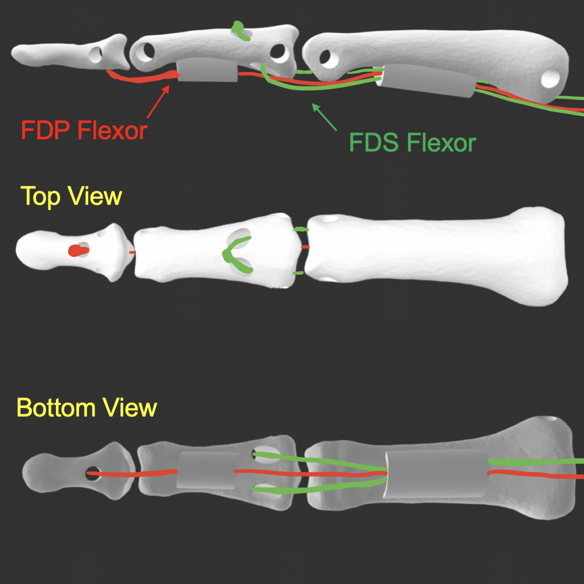

Phone
+1 857 209 6440
Email
rebei@mit.edu
Anthropomorphic, Tendon-Driven 3D Printed Robotic Hand
Computational Fabrication Group at MIT CSAIL Laboratory Research, Ongoing Project Summer 2020

Prototype 2: Anthropomorphic Finger Design with 3 Flexor Tendons
Design Features
This summer I will be working on the mechanical design of an anthropomorphic, tendon-driven 3D printed robotic hand. The first few weeks of the summer was dedicated on creating a comprehensive survey of current robotic designs and researching the The rest of the summer I will spend designing and creating prototypes of anthropomorphic robotic fingers.
Tendon-Driven
Finger design mimics biological musculoskeletal systems and designed for manual actuation of tendons.
3D Printed
Finger design mimics biological musculoskeletal systems and designed for manual actuation of tendons.
Modularity
The mechanical design of the hand is seperated from the sensing unit and control system. The robotic hand design will have the ability to function like a "lego kit" for
Protype 1 Linkages CAD in SolidWorks
Prototype 1
For this prototype, I wanted to create the simplest tendon-driven finger to understand the how these mechanisms work.
Prototype 1 Kinematics
Protype 2 CAD in SolidWorks
Prototype 2
For this prototype, I wanted to create a more anthropomorphic design, with more tendons that match more closley to the anatomy of the human hand. The tendons included in this design are:
Tendons
Flexor Gigitorum Profundus (FDP)
Functions as a flexor of the DIP joint, assists with PIP and MCP flexion, located at the base of the distal phalange
Flexor Digitorum Superficialis (FDS)
Functions as a flexor of the PIP joint, assists with MCP flexion, attached at the middle phalange
Extensor Digitorum Communis (EDC) and Extensor Hood
The tendons of the extensor digitorum flatten as they reach the metacarpals and become extensor hoods which fan out and wrap around the metacarpal and proximal phalanx joining onto the palmar plate
Similar Projects
Click below to explore more of my projects!